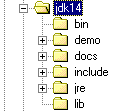

4. Häufig verwendete Klassen in Java
In diesem Kapitel stellen wir eine Reihe häufig verwendeter Java-Klassen vor. Diese verfügen über zahlreiche Attribute, Methoden und Konstruktoren. In jedem Fall präsentieren wir nur einen kleinen Ausschnitt der Klassen. Details dazu finden Sie in der Java-Hilfe, die wir nun vorstellen.
4.1. Die Dokumentation
Wenn Sie das Sun JDK im Ordner <jdk> installiert haben, finden Sie die Dokumentation im Ordner <jdk>\docs:

Manchmal haben Sie zwar ein JDK, aber keine Dokumentation. Diese finden Sie auf der Website von Sun unter http://www.sun.com. Im Ordner „docs“ finden Sie eine Datei namens „index.html“, die als Einstiegspunkt für die JDK-Hilfe dient:


Über den Link „API & Language“ oben gelangt man zu den Java-Klassen. Der Link „Demos/Tutorials“ ist besonders nützlich, um Beispiele für Java-Programme zu finden. Folgen wir dem Link „API & Language“:

Folgen wir dem Link zur Java 2 Platform API:

Diese Seite ist der eigentliche Ausgangspunkt für die Klassendokumentation. Sie können eine Verknüpfung dazu erstellen, um schnell darauf zugreifen zu können. Die URL lautet <jdk>\docs\api\index.html. Sie enthält Links zu Hunderten von Java-Klassen im JDK. Wenn Sie gerade erst anfangen, besteht die größte Herausforderung darin, herauszufinden, was diese verschiedenen Klassen bewirken. Zu Beginn ist diese Ressource nur dann nützlich, wenn Sie den Namen der Klasse kennen, über die Sie Informationen suchen. Sie können sich auch an den Klassennamen orientieren, da diese in der Regel den Zweck der Klasse andeuten.
Nehmen wir ein Beispiel und suchen wir nach Informationen zur Vector-Klasse, die ein dynamisches Array implementiert. Suchen Sie einfach in der Klassenliste im linken Bereich nach dem Link zur Vector-Klasse:

und klicken Sie auf den Link, um die Klassendefinition anzuzeigen:

Dort finden Sie
- die Hierarchie, in der sich die Klasse befindet, in diesem Fall java.util.Vector
- die Liste der Felder (Attribute) der Klasse
- die Liste der Konstruktoren
- die Liste der Methoden
In den folgenden Abschnitten stellen wir verschiedene Klassen vor. Wir empfehlen dem Leser, die vollständige Definition der verwendeten Klassen systematisch zu überprüfen.
4.2. Testklassen
In den folgenden Beispielen werden teilweise die Klassen „Person“ und „Teacher“ verwendet. Ihre Definitionen finden Sie hier.
public class personne{
// last name, first name, age
private String prenom;
private String nom;
private int age;
// builder 1
public personne(String P, String N, int age){
this.prenom=P;
this.nom=N;
this.age=age;
}
// builder 2
public personne(personne P){
this.prenom=P.prenom;
this.nom=P.nom;
this.age=P.age;
}
// toString
public String toString(){
return "personne("+prenom+","+nom+","+age+")";
}
// accessors
public String getPrenom(){
return prenom;
}
public String getNom(){
return nom;
}
public int getAge(){
return age;
}
//modifiers
public void setPrenom(String P){
this.prenom=P;
}
public void setNom(String N){
this.nom=N;
}
public void setAge(int age){
this.age=age;
}
}
Die Klasse „Teacher“ ist von der Klasse „Person“ abgeleitet und wie folgt definiert:
class enseignant extends personne{
// attributes
private int section;
// manufacturer
public enseignant(String P, String N, int age,int section){
super(P,N,age);
this.section=section;
}
// toString
public String toString(){
return "etudiant("+super.toString()+","+section+")";
}
}
Wir werden außerdem eine Klasse „Student“ verwenden, die von der Klasse „Person“ abgeleitet und wie folgt definiert ist:
class etudiant extends personne{
String numero;
public etudiant(String P, String N, int age,String numero){
super(P,N,age);
this.numero=numero;
}
public String toString(){
return "etudiant("+super.toString()+","+numero+")";
}
}
4.3. Die String-Klasse
Die String-Klasse repräsentiert Zeichenfolgen. Sei *name* eine Zeichenfolgenvariable:
*String name;*
name ist eine Referenz auf ein Objekt, das noch nicht initialisiert wurde. Es kann auf zwei Arten initialisiert werden:
**name = "Pferd"** oder **name = new String("Pferd")**
Beide Methoden sind gleichwertig. Wenn wir später name="fish" schreiben, verweist name dann auf ein neues Objekt. Das alte String("horse")-Objekt geht verloren, und der von ihm belegte Speicher wird freigegeben.
Die Klasse String verfügt über viele Attribute und Methoden. Hier sind einige davon:
public char charAt(int i) | gibt das Zeichen an Position i in der Zeichenkette zurück, wobei das erste Zeichen die Position 0 hat. Somit ist `String("horse").charAt(3)` gleich 'h' |
public int compareTo(string2) | string1.compareTo(string2) vergleicht string1 mit string2 und gibt 0 zurück, wenn string1 = string2, 1, wenn string1 > string2, und -1, wenn string1 < string2 |
public boolean equals(Object anObject) | string1.equals(string2) gibt true zurück, wenn string1 = string2 ist, andernfalls false |
public String toLowerCase() | string1.toLowerCase() wandelt string1 in Kleinbuchstaben um |
public String toUpperCase() | string1.toUpperCase() wandelt string1 in Großbuchstaben um |
public String trim() | string1.trim() entfernt führende und nachgestellte Leerzeichen aus string1 |
public String substring(int beginIndex, int endIndex) | String("chapeau").subString(2,4) gibt die Zeichenfolge "ape" zurück |
public char[] toCharArray() | konvertiert die Zeichen der Zeichenkette in ein Zeichenarray |
int length() | Anzahl der Zeichen in der Zeichenkette |
int indexOf(String string2) | gibt die erste Stelle zurück, an der string2 in der aktuellen Zeichenkette vorkommt, oder -1, wenn string2 nicht vorhanden ist |
int indexOf(String string2, int startIndex) | Gibt die erste Stelle zurück, an der string2 in der aktuellen Zeichenkette vorkommt, oder -1, wenn string2 nicht gefunden wird. Die Suche beginnt bei dem Zeichen an der Position startIndex. |
int lastIndexOf(String string2) | Gibt die letzte Position von string2 im aktuellen String zurück oder -1, wenn string2 nicht vorhanden ist |
boolean startsWith(String string2) | gibt true zurück, wenn die aktuelle Zeichenkette mit string2 beginnt |
boolean endsWith(String string2) | gibt „true“ zurück, wenn die aktuelle Zeichenfolge mit string2 endet |
boolean matches(String regex) | gibt true zurück, wenn die aktuelle Zeichenfolge mit dem regulären Ausdruck regex übereinstimmt. |
String[] split(String regex) | Die aktuelle Zeichenfolge besteht aus Feldern, die durch eine Zeichenfolge getrennt sind, die dem regulären Ausdruck regex entspricht. Die Methode split ruft die Felder in ein Array ab. |
String replace(char oldChar, char newChar) | Ersetzt das Zeichen oldChar im aktuellen String durch das Zeichen newChar. |
Hier ist ein Beispielprogramm:
// imports
import java.io.*;
public class string1{
// a demonstration class
public static void main(String[] args){
String uneChaine="l'oiseau vole au-dessus des nuages";
affiche("uneChaine="+uneChaine);
affiche("uneChaine.Length="+uneChaine.length());
affiche("chaine[10]="+uneChaine.charAt(10));
affiche("uneChaine.IndexOf(\"vole\")="+uneChaine.indexOf("vole"));
affiche("uneChaine.IndexOf(\"x\")="+uneChaine.indexOf("x"));
affiche("uneChaine.LastIndexOf('a')="+uneChaine.lastIndexOf('a'));
affiche("uneChaine.LastIndexOf('x')="+uneChaine.lastIndexOf('x'));
affiche("uneChaine.substring(4,7)="+uneChaine.substring(4,7));
affiche("uneChaine.ToUpper()="+uneChaine.toUpperCase());
affiche("uneChaine.ToLower()="+uneChaine.toLowerCase());
affiche("uneChaine.Replace('a','A')="+uneChaine.replace('a','A'));
String[] champs=uneChaine.split("\\s+");
for (int i=0;i<champs.length;i++){
affiche("champs["+i+"]=["+champs[i]+"]");
}//for
affiche("(\" abc \").trim()=["+" abc ".trim()+"]");
}//Main
// poster
public static void affiche(String msg){
// poster msg
System.out.println(msg);
}//poster
}//class
und die erhaltenen Ergebnisse:
uneChaine=l'oiseau vole au-dessus des nuages
uneChaine.Length=34
chaine[10]=o
uneChaine.IndexOf("vole")=9
uneChaine.IndexOf("x")=-1
uneChaine.LastIndexOf('a')=30
uneChaine.LastIndexOf('x')=-1
uneChaine.substring(4,7)=sea
uneChaine.ToUpper()=L'OISEAU VOLE AU-DESSUS DES NUAGES
uneChaine.ToLower()=l'oiseau vole au-dessus des nuages
uneChaine.Replace('a','A')=l'oiseAu vole Au-dessus des nuAges
champs[0]=[l'oiseau]
champs[1]=[vole]
champs[2]=[au-dessus]
champs[3]=[des]
champs[4]=[nuages]
(" abc ").trim()=[abc]
4.4. Die Vektorklasse
Ein Vektor ist ein dynamisches Array, dessen Elemente Objektreferenzen sind. Es handelt sich also um ein Array von Objekten, dessen Größe sich im Laufe der Zeit ändern kann, was bei den statischen Arrays, die wir bisher kennengelernt haben, nicht möglich ist. Hier sind einige Felder, Konstruktoren oder Methoden dieser Klasse:
public Vector() | erstellt einen leeren Vektor |
public final int size() | Anzahl der Elemente im Vektor |
public final void addElement(Object obj) | fügt das durch obj referenzierte Objekt zum Vektor hinzu |
public final Object elementAt(int index) | Verweis auf das Objekt an der Position index im Array – Indizes beginnen bei 0 |
public final Enumeration elements() | die Menge der Elemente im Array als Enumeration |
public final Object firstElement() | Verweis auf das erste Element des Arrays |
public final Object lastElement() | Verweis auf das letzte Element des Vektors |
public final boolean isEmpty() | gibt „true“ zurück, wenn das Array leer ist |
public final void removeElementAt(int index) | entfernt das Element an der Position index |
public final void removeAllElements() | löscht alle Elemente aus dem Array |
public final String toString() | gibt eine Zeichenkette zurück, die das Array darstellt |
Hier ist ein Testprogramm:
// imported classes
import java.util.*;
public class test1{
// main program - static - class method
public static void main(String arg[]){
// creation of objects that are instances of classes
personne p=new personne("Jean","Dupont",30);
enseignant en=new enseignant("Paula","Hanson",56,27);
etudiant et=new etudiant("Chris","Garot",22,"19980405");
System.out.println("p="+p.toString());
System.out.println("en="+en.toString());
System.out.println("et="+et.toString());
// polymorphism
personne p2=(personne)en;
System.out.println("p2="+p2.toString());
personne p3=(personne)et;
System.out.println("p3="+p3.toString());
// a vector
Vector V=new Vector();
V.addElement(p);V.addElement(en);V.addElement(et);
System.out.println("Taille du vecteur V = "+V.size());
for(int i=0;i<V.size();i++){
p2=(personne) V.elementAt(i);
System.out.println("V["+i+"]="+p2.toString());
}
} // fine hand
}// end of class
Kompilieren wir dieses Programm:
E:\data\serge\JAVA\poly juin 2002\Chapitre 3\vector>dir
10/06/2002 10:41 1 134 personne.class
10/06/2002 10:41 619 enseignant.class
10/06/2002 10:41 610 etudiant.class
10/06/2002 10:42 1 035 test1.java
E:\data\serge\JAVA\poly juin 2002\Chapitre 3\vector>javac test1.java
E:\data\serge\JAVA\poly juin 2002\Chapitre 3\vector>dir
10/06/2002 10:41 1 134 personne.class
10/06/2002 10:41 619 enseignant.class
10/06/2002 10:41 610 etudiant.class
10/06/2002 10:42 1 035 test1.java
10/06/2002 10:43 1 506 test1.class
Führen wir die Datei test1.class aus:
E:\data\serge\JAVA\poly juin 2002\Chapitre 3\vector>java test1
p=personne(Jean,Dupont,30)
en=etudiant(personne(Paula,Hanson,56),27)
et=etudiant(personne(Chris,Garot,22),19980405)
p2=etudiant(personne(Paula,Hanson,56),27)
p3=etudiant(personne(Chris,Garot,22),19980405)
Taille du vecteur V = 3
V[0]=personne(Jean,Dupont,30)
V[1]=etudiant(personne(Paula,Hanson,56),27)
V[2]=etudiant(personne(Chris,Garot,22),19980405)
Von nun an werden wir den Vorgang des Kompilierens und Ausführens der Testprogramme nicht mehr wiederholen. Wiederholen Sie einfach die oben beschriebenen Schritte.
4.5. Die ArrayList-Klasse
Die Klasse ArrayList entspricht der Klasse Vector. Sie unterscheidet sich von dieser im Wesentlichen nur dann, wenn sie von mehreren Threads gleichzeitig genutzt wird. Die Methoden zur Thread-Synchronisation für den Zugriff auf einen Vector oder eine ArrayList unterscheiden sich. Abgesehen davon können beide Klassen austauschbar verwendet werden. Hier sind einige Felder, Konstruktoren und Methoden dieser Klasse:
ArrayList() | erstellt ein leeres Array |
int size() | Anzahl der Elemente im Array |
void add(Object obj) | fügt das durch obj referenzierte Objekt zum Array hinzu |
void add(int index, Object obj) | fügt das durch obj referenzierte Objekt an der Position index zum Array hinzu |
Object get(int index) | Verweis auf das Objekt an der Position index im Array – Indizes beginnen bei 0 |
boolean isEmpty() | gibt „true“ zurück, wenn das Array leer ist |
void remove(int index) | Entfernt das Element an der Position index |
void clear() | löscht alle Elemente aus dem Array |
Object[] toArray() | wandelt das dynamische Array in ein Standard-Array um |
String toString() | gibt eine Zeichenkette zurück, die das Array darstellt |
Hier ist ein Testprogramm:
// imported classes
import java.util.*;
public class test1{
// main program - static - class method
public static void main(String arg[]){
// creation of objects that are instances of classes
personne p=new personne("Jean","Dupont",30);
enseignant en=new enseignant("Paula","Hanson",56,27);
etudiant et=new etudiant("Chris","Garot",22,"19980405");
System.out.println("p="+p);
System.out.println("en="+en);
System.out.println("et="+et);
// polymorphism
personne p2=(personne)en;
System.out.println("p2="+p2);
personne p3=(personne)et;
System.out.println("p3="+p3);
// a vector
ArrayList personnes=new ArrayList();
personnes.add(p);personnes.add(en);personnes.add(et);
System.out.println("Nombre de personnes = "+personnes.size());
for(int i=0;i<personnes.size();i++){
p2=(personne) personnes.get(i);
System.out.println("personnes["+i+"]="+p2);
}
} // fine hand
}// end of class
Die erhaltenen Ergebnisse sind dieselben wie zuvor.
4.6. Die Arrays-Klasse
Die Klasse *java.util.Arrays* bietet Zugriff auf statische Methoden, mit denen verschiedene Operationen an Arrays durchgeführt werden können, insbesondere das Sortieren und Suchen von Elementen. Hier sind einige dieser Methoden:
static void sort(array) | sortiert das Array anhand der impliziten Reihenfolge des Datentyps des Arrays, unabhängig davon, ob es sich um Zahlen oder Zeichenfolgen handelt. |
static void sort(Object[] array, Comparator C) | Sortiert das Array unter Verwendung der Vergleichsfunktion C zum Vergleichen der Elemente |
static int binarySearch(array, element) | Gibt die Position des Elements im Array zurück oder andernfalls einen Wert <0. Das Array muss zuvor sortiert worden sein. |
static int binarySearch(Object[] array, Object element, Comparator C) | Wie oben, verwendet jedoch die Vergleichsfunktion C, um zwei Elemente im Array zu vergleichen. |
Hier ist ein erstes Beispiel:
import java.util.*;
public class sort2 implements Comparator{
// an internal private class
private class personne{
private String nom;
private int age;
public personne(String nom, int age){
this.nom=nom; // person's name
this.age=age; // his age
}
// recover age
public int getAge(){
return age;
}
// identity of the person
public String toString(){
return ("["+nom+","+age+"]");
}
}; // class person
// manufacturer
public sort2() {
// a table of people
personne[] amis=new personne[]{new personne("tintin",100),new personne("milou",80),
new personne("tournesol",40)};
// sorting the people table
Arrays.sort(amis,this);
// check
for(int i=0;i<3;i++)
System.out.println(amis[i]);
}//manufacturer
// the function that compares people
public int compare(Object o1, Object o2){
// must make
// -1 if o1 "smaller than" o2
// 0 if o1 "equal to" o2
// +1 if o1 "greater than" o2
personne p1=(personne)o1;
personne p2=(personne)o2;
int age1=p1.getAge();
int age2=p2.getAge();
if(age1<age2) return (-1);
else if (age1==age2) return (0);
else return +1;
}//compare
// test function
public static void main(String[] arg){
new sort2();
}//hand
}//class
Sehen wir uns dieses Programm einmal an. Die Hauptfunktion erstellt ein sort2-Objekt. Der Konstruktor für die Klasse sort2 sieht wie folgt aus:
// manufacturer
public sort2() {
// a table of people
personne[] amis=new personne[]{new personne("tintin",100),new personne("milou",80),
new personne("tournesol",40)};
// sorting the people table
Arrays.sort(amis,this);
// check
for(int i=0;i<3;i++)
System.out.println(amis[i]);
}//manufacturer
Das zu sortierende Array ist ein Array von Person-Objekten. Die Person-Klasse ist innerhalb der sort2-Klasse als privat definiert. Die statische sort-Methode der Arrays-Klasse weiß nicht, wie ein Array von Person-Objekten sortiert wird, daher sind wir hier gezwungen, die Form void sort(Object[] obj, Comparator C) zu verwenden. Comparator ist eine Schnittstelle, die nur eine Methode definiert:
und die 0 zurückgeben muss, wenn o1=o2, -1, wenn o1 < o2, und +1, wenn o1 > o2. Im Prototyp void sort(Object[] obj, Comparator C) muss das zweite Argument C ein Objekt sein, das die Comparator-Schnittstelle implementiert. Im Konstruktor von sort2 haben wir das aktuelle Objekt this gewählt:
Dies erfordert zwei Maßnahmen:
- Angeben, dass die Klasse „sort2“ die Comparator-Schnittstelle implementiert
- die Vergleichsfunktion in der Klasse sort2 schreiben.
Dies sieht wie folgt aus:
// the function that compares people
public int compare(Object o1, Object o2){
// must make
// -1 if o1 "smaller than" o2
// 0 if o1 "equal to" o2
// +1 if o1 "greater than" o2
personne p1=(personne)o1;
personne p2=(personne)o2;
int age1=p1.getAge();
int age2=p2.getAge();
if(age1<age2) return (-1);
else if (age1==age2) return (0);
else return +1;
}//compare
Um zwei Person-Objekte zu vergleichen, verwenden wir hier das Alter (wir hätten auch den Namen verwenden können).
Die Ergebnisse der Ausführung lauten wie folgt:
Wir hätten bei der Implementierung der Comparator-Schnittstelle auch anders vorgehen können:
import java.util.*;
public class sort2 {
// an internal private class
private class personne{
…….
}; // class person
// manufacturer
public sort2() {
// a table of people
personne[] amis=new personne[]{new personne("tintin",100),new personne("milou",80),
new personne("tournesol",40)};
// sorting the people table
Arrays.sort(amis,
new java.util.Comparator(){
public int compare(Object o1, Object o2){
return compare1(o1,o2);
}//compare
}//class
);
// check
for(int i=0;i<3;i++)
System.out.println(amis[i]);
}//manufacturer
// the function that compares people
public int compare1(Object o1, Object o2){
// must make
// -1 if o1 "smaller than" o2
// 0 if o1 "equal to" o2
// +1 if o1 "greater than" o2
personne p1=(personne)o1;
personne p2=(personne)o2;
int age1=p1.getAge();
int age2=p2.getAge();
if(age1<age2) return (-1);
else if (age1==age2) return (0);
else return +1;
}//compare1
// hand
public static void main(String[] arg){
new sort2();
}//hand
}//class
Die Sortieranweisung lautet nun wie folgt:
// sorting the people table
Arrays.sort(amis,
new java.util.Comparator(){
public int compare(Object o1, Object o2){
return compare1(o1,o2);
}//compare
}//class
);
Der zweite Parameter der compare-Methode muss ein Objekt sein, das die Comparator-Schnittstelle implementiert. Hier erstellen wir ein solches Objekt mit new java.util.Comparator(), und der Text, der auf {…} folgt, definiert die Klasse, aus der das Objekt erstellt wird. Diese wird als anonyme Klasse bezeichnet, da sie keinen Namen hat. In dieser anonymen Klasse, die die Comparator-Schnittstelle implementieren muss, definieren wir die compare-Methode dieser Schnittstelle. Diese Methode ruft einfach die compare1-Methode der sort2-Klasse auf. Damit sind wir wieder beim vorherigen Fall angelangt.
Die Klasse sort2 implementiert die Comparator-Schnittstelle nicht mehr. Daher lautet ihre Deklaration nun:
Nun testen wir die Methode binarySearch der Klasse *Arrays* anhand des folgenden Beispiels:
import java.util.*;
public class sort4 {
// an internal private class
private class personne{
// attributes
private String nom;
private int age;
// manufacturer
public personne(String nom, int age){
this.nom=nom; // person's name
this.age=age; // his age
}
// retrieve name
public String getNom(){
return nom;
}
// recover age
public int getAge(){
return age;
}
// identity of the person
public String toString(){
return ("["+nom+","+age+"]");
}
}; // class person
// manufacturer
public sort4() {
// a table of people
personne[] amis=new personne[]{new personne("tintin",100),new personne("milou",80),
new personne("tournesol",40)};
// comparators
java.util.Comparator comparateur1=
new java.util.Comparator(){
public int compare(Object o1, Object o2){
return compare1(o1,o2);
}//compare
}//class
;
java.util.Comparator comparateur2=
new java.util.Comparator(){
public int compare(Object o1, Object o2){
return compare2(o1,o2);
}//compare
}//class
;
// sorting the people table
Arrays.sort(amis,comparateur1);
// check
for(int i=0;i<3;i++)
System.out.println(amis[i]);
// research
cherche("milou",amis,comparateur2);
cherche("xx",amis,comparateur2);
}//manufacturer
// the function that compares people
public int compare1(Object o1, Object o2){
// must make
// -1 if o1 "smaller than" o2
// 0 if o1 "equal to" o2
// +1 if o1 "greater than" o2
personne p1=(personne)o1;
personne p2=(personne)o2;
int age1=p1.getAge();
int age2=p2.getAge();
if(age1<age2) return (-1);
else if (age1==age2) return (0);
else return +1;
}//compare1
// the function that compares a person to a name
public int compare2(Object o1, Object o2){
// o1 is a person
// o2 is a String, the name name2 of a person
// must make
// -1 if o1.nom "smaller than" name2
// 0 if o1.nom "equal to" name2
// +1 if o1.nom "greater than" name2
personne p1=(personne)o1;
String nom1=p1.getNom();
String nom2=(String)o2;
return nom1.compareTo(nom2);
}//compare2
public void cherche(String ami,personne[] amis, Comparator comparateur){
// search for a friend in the friends table
int position=Arrays.binarySearch(amis,ami,comparateur);
// found?
if(position>=0)
System.out.println(ami + " a " + amis[position].getAge() + " ans");
else System.out.println(ami + " n'existe pas dans le tableau");
}//search
// hand
public static void main(String[] arg){
new sort4();
}//hand
}//class
Hier sind wir etwas anders vorgegangen als in den vorherigen Beispielen. Die beiden Comparator-Objekte, die von den Methoden sort und binarySearch benötigt werden, wurden erstellt und den Variablen comparator1 und comparator2 zugewiesen.
// comparators
java.util.Comparator comparateur1=
new java.util.Comparator(){
public int compare(Object o1, Object o2){
return compare1(o1,o2);
}//compare
}//class
;
java.util.Comparator comparateur2=
new java.util.Comparator(){
public int compare(Object o1, Object o2){
return compare2(o1,o2);
}//compare
}//class
;
Im Konstruktor sort4 wird zweimal eine binäre Suche im Array „friends“ durchgeführt:
Die Suchmethode erhält alle Parameter, die sie benötigt, um die Methode binarySearch aufzurufen:
public void cherche(String ami,personne[] amis, Comparator comparateur){
// search for a friend in the friends table
int position=Arrays.binarySearch(amis,ami,comparateur);
// found?
if(position>=0)
System.out.println(ami + " a " + amis[position].getAge() + " ans");
else System.out.println(ami + " n'existe pas dans le tableau");
}//search
Die Methode binarySearch arbeitet mit dem Komparator comparator2, der wiederum die Methode compare2* der Klasse sort4 aufruft. Die Methode gibt die Position des gesuchten Namens im Array zurück, falls dieser vorhanden ist, andernfalls eine Zahl <0. Die Methode compare2 wird verwendet, um ein Person-Objekt mit einem Namen vom Typ String* zu vergleichen.
// the function that compares a person to a name
public int compare2(Object o1, Object o2){
// o1 is a person
// o2 is a String, the name name2 of a person
// must make
// -1 if o1.nom "smaller than" name2
// 0 if o1.nom "equal to" name2
// +1 if o1.nom "greater than" name2
personne p1=(personne)o1;
String nom1=p1.getNom();
String nom2=(String)o2;
return nom1.compareTo(nom2);
}//compare2
Im Gegensatz zur sort-Methode nimmt die binarySearch-Methode nicht zwei Person-Objekte entgegen, sondern ein Person-Objekt und ein String-Objekt in dieser Reihenfolge. Der erste Parameter ist ein Element des friends-Arrays, der zweite ist der Name der gesuchten Person.
4.7. Die Klasse „Enumeration“
Enumeration ist eine Schnittstelle, keine Klasse. Sie verfügt über die folgenden Methoden:
public abstract boolean hasMoreElements() | gibt „true“ zurück, wenn die Enumeration noch Elemente enthält |
public abstract Object nextElement() | gibt eine Referenz auf das nächste Element in der Enumeration zurück |
Wie verwendet man eine Enumeration? Im Allgemeinen so:
Enumeration e=… // an enumeration object is retrieved
while(e.hasMoreElements()){
// use e.nextElement() element
}
Hier ist ein Beispiel:
// imported classes
import java.util.*;
public class test1{
// main program - static - class method
public static void main(String arg[]){
// creation of objects that are instances of classes
personne p=new personne("Jean","Dupont",30);
enseignant en=new enseignant("Paula","Hanson",56,27);
etudiant et=new etudiant("Chris","Garot",22,"19980405");
System.out.println("p="+p.toString());
System.out.println("en="+en.toString());
System.out.println("et="+et.toString());
// polymorphism
personne p2=(personne)en;
System.out.println("p2="+p2.toString());
personne p3=(personne)et;
System.out.println("p3="+p3.toString());
// a vector
Vector V=new Vector();
V.addElement(p);V.addElement(en);V.addElement(et);
System.out.println("Taille du vecteur V = "+V.size());
int i;
for(i=0;i<V.size();i++){
p2=(personne) V.elementAt(i);
System.out.println("V["+i+"]="+p2.toString());
}
// an enumeration
Enumeration E=V.elements();
i=0;
while(E.hasMoreElements()){
p2=(personne) E.nextElement();
System.out.println("V["+i+"]="+p2.toString());
i++;
}
}// fine hand
}//end of class
Es werden folgende Ergebnisse erhalten:
p=personne(Jean,Dupont,30)
en=enseignant(personne(Paula,Hanson,56),27)
et=etudiant(personne(Chris,Garot,22),19980405)
p2=enseignant(personne(Paula,Hanson,56),27)
p3=etudiant(personne(Chris,Garot,22),19980405)
Taille du vecteur V = 3
V[0]=personne(Jean,Dupont,30)
V[1]=enseignant(personne(Paula,Hanson,56),27)
V[2]=etudiant(personne(Chris,Garot,22),19980405)
V[0]=personne(Jean,Dupont,30)
V[1]=enseignant(personne(Paula,Hanson,56),27)
V[2]=etudiant(personne(Chris,Garot,22),19980405)
4.8. Die HashTable-Klasse
Mit der HashTable-Klasse können Sie ein Wörterbuch implementieren. Ein Wörterbuch kann als zweispaltiges Array betrachtet werden:
Schlüssel | Wert |
Schlüssel1 | Wert1 |
Schlüssel2 | Wert2 |
.. | ... |
Schlüssel sind eindeutig, d. h., es kann keine zwei identischen Schlüssel geben. Die wichtigsten Methoden und Eigenschaften der Hashtable-Klasse sind wie folgt:
public Hashtable() | Konstruktor – erstellt ein leeres Wörterbuch |
public int size() | Anzahl der Elemente im Wörterbuch – wobei ein Element ein Paar (Schlüssel, Wert) ist |
public Object put(Object key, Object value) | fügt das Paar (Schlüssel, Wert) zum Wörterbuch hinzu |
public Object get(Object key) | Ruft das mit dem Schlüssel „key“ verknüpfte Objekt ab oder gibt „null“ zurück, falls der Schlüssel „key“ nicht existiert |
public boolean containsKey(Object key) | true, wenn der Schlüssel im Wörterbuch vorhanden ist |
public boolean contains(Object value) | true, wenn der Wert value im Wörterbuch vorhanden ist |
public Enumeration keys() | gibt die Schlüssel des Wörterbuchs als Aufzählung zurück |
public Object remove(Object key) | entfernt das (Schlüssel, Wert)-Paar, wobei Schlüssel=Schlüssel |
public String toString() | identifiziert das Wörterbuch |
Hier ist ein Beispiel:
// imported classes
import java.util.*;
public class test1{
// main program - static - class method
public static void main(String arg[]){
// creation of objects that are instances of classes
personne p=new personne("Jean","Dupont",30);
enseignant en=new enseignant("Paula","Hanson",56,27);
etudiant et=new etudiant("Chris","Garot",22,"19980405");
System.out.println("p="+p.toString());
System.out.println("en="+en.toString());
System.out.println("et="+et.toString());
// polymorphism
personne p2=(personne)en;
System.out.println("p2="+p2.toString());
personne p3=(personne)et;
System.out.println("p3="+p3.toString());
// a dictionary
Hashtable H=new Hashtable();
H.put("personne1",p);
H.put("personne2",en);
H.put("personne3",et);
Enumeration E=H.keys();
int i=0;
String cle;
while(E.hasMoreElements()){
cle=(String) E.nextElement();
p2=(personne) H.get(cle);
System.out.println("clé "+i+"="+cle+" valeur="+p2.toString());
i++;
}
}//fine hand
}//end of class
Die Ergebnisse lauten wie folgt:
p=personne(Jean,Dupont,30)
en=enseignant(personne(Paula,Hanson,56),27)
et=etudiant(personne(Chris,Garot,22),19980405)
p2=enseignant(personne(Paula,Hanson,56),27)
p3=etudiant(personne(Chris,Garot,22),19980405)
clé 0=personne3 valeur=etudiant(personne(Chris,Garot,22),19980405)
clé 1=personne2 valeur=enseignant(personne(Paula,Hanson,56),27)
clé 2=personne1 valeur=personne(Jean,Dupont,30)
4.9. Textdateien
4.9.1. Schreiben
Um in eine Datei zu schreiben, benötigen Sie einen Schreibstrom. Hierfür können Sie die Klasse FileWriter verwenden. Die folgenden Konstruktoren werden häufig verwendet:
FileWriter(String fileName) | erstellt eine Datei mit dem Namen fileName – Sie können dann in diese schreiben – jede bereits vorhandene Datei mit demselben Namen wird überschrieben |
FileWriter(String fileName, boolean append) | wie oben – jede vorhandene Datei mit demselben Namen kann verwendet werden, indem sie im Anfüge-Modus geöffnet wird (append=true) |
Die Klasse FileWriter bietet eine Reihe von Methoden zum Schreiben in eine Datei, die von der Klasse Writer geerbt wurden. Zum Schreiben in eine Textdatei empfiehlt sich die Verwendung der Klasse PrintWriter, deren häufig verwendete Konstruktoren wie folgt lauten:
PrintWriter(Writer out) | Das Argument ist vom Typ Writer, d. h. ein Schreibstrom (in eine Datei, über das Netzwerk usw.) |
PrintWriter(Writer out, boolean autoflush) | Wie oben. Das zweite Argument steuert die Zeilenpufferung. Bei der Einstellung „false“ (Standard) durchlaufen die in die Datei geschriebenen Zeilen einen Puffer im Arbeitsspeicher. Wenn der Puffer voll ist, wird er in die Datei geschrieben. Dies verbessert den Festplattenzugriff. Allerdings ist dieses Verhalten manchmal unerwünscht, insbesondere beim Schreiben über ein Netzwerk. |
Die nützlichen Methoden der PrintWriter-Klasse sind wie folgt:
void print(Type T) | schreibt die Daten T (String, int, …) |
void println(Type T) | wie oben, endet jedoch mit einem Zeilenumbruchzeichen |
void flush() | leert den Puffer, wenn nicht im Autoflush-Modus |
void close() | schließt den Schreibstrom |
Hier ist ein Programm, das einige Zeilen in eine Textdatei schreibt:
// imports
import java.io.*;
public class ecrire{
public static void main(String[] arg){
// open file
PrintWriter fic=null;
try{
fic=new PrintWriter(new FileWriter("out"));
} catch (Exception e){
Erreur(e,1);
}
// write to file
try{
fic.println("Jean,Dupont,27");
fic.println("Pauline,Garcia,24");
fic.println("Gilles,Dumond,56");
} catch (Exception e){
Erreur(e,3);
}
// close file
try{
fic.close();
} catch (Exception e){
Erreur(e,2);
}
}// fine hand
private static void Erreur(Exception e, int code){
System.err.println("Erreur : "+e);
System.exit(code);
}//Error
}//class
Die vom Programm erzeugte Ausgabedatei sieht wie folgt aus:
4.9.2. Lesen
Um den Inhalt einer Datei zu lesen, benötigen Sie einen mit der Datei verknüpften Lesestrom. Dazu können Sie die Klasse FileReader und den folgenden Konstruktor verwenden:
FileReader(String filename) | öffnet einen Lesestrom aus der angegebenen Datei. Löst eine Ausnahme aus, wenn der Vorgang fehlschlägt. |
Die Klasse FileReader verfügt über eine Reihe von Methoden zum Lesen aus einer Datei, die von der Klasse Reader geerbt wurden. Um Textzeilen aus einer Textdatei zu lesen, empfiehlt es sich, die Klasse BufferedReader mit dem folgenden Konstruktor zu verwenden:
BufferedReader(Reader in) | öffnet einen gepufferten Lesestrom aus einem Eingabestrom in. Dieser Strom vom Typ Reader kann von der Tastatur, einer Datei, dem Netzwerk usw. stammen. |
Die nützlichen Methoden der BufferedReader-Klasse sind wie folgt:
int read() | liest ein Zeichen |
String readLine() | liest eine Textzeile |
int read(char[] buffer, int offset, int size) | Liest „size“ Zeichen aus der Datei und speichert sie ab der Position „offset“ im Pufferarray. |
void close() | schließt den Lesestrom |
Hier ist ein Programm, das den Inhalt der zuvor erstellten Datei liest:
// imported classes
import java.util.*;
import java.io.*;
public class lire{
public static void main(String[] arg){
personne p=null;
// open file
BufferedReader IN=null;
try{
IN=new BufferedReader(new FileReader("out"));
} catch (Exception e){
Erreur(e,1);
}
// data
String ligne=null;
String[] champs=null;
String prenom=null;
String nom=null;
int age=0;
// error handling
try{
while((ligne=IN.readLine())!=null){
champs=ligne.split(",");
prenom=champs[0];
nom=champs[1];
age=Integer.parseInt(champs[2]);
System.out.println(""+new personne(prenom,nom,age));
}// end while
} catch (Exception e){
Erreur(e,2);
}
// close file
try{
IN.close();
} catch (Exception e){
Erreur(e,3);
}
}// fine hand
// Error
public static void Erreur(Exception e, int code){
System.err.println("Erreur : "+e);
System.exit(code);
}
}// end of class
Die Ausführung des Programms liefert folgende Ergebnisse:
4.9.3. Speichern eines Personenobjekts
Wir wenden das soeben Gesehene an, um die Klasse „Person“ um eine Methode zu erweitern, mit der wir die Attribute einer Person in einer Datei speichern können. Wir fügen die Methode „saveAttributes“ zur Definition der Klasse „Person“ hinzu:
// ------------------------------
// sauvegarde dans fichier texte
// ------------------------------
public void sauveAttributs(PrintWriter P){
P.println(""+this);
}
Vergessen Sie nicht, vor der Definition der Klasse „Person“ das Paket „java.io“ zu importieren:
Die Methode „saveAttributes“ benötigt einen einzigen Parameter: den „PrintWriter“-Stream, in den sie schreiben soll. Ein Testprogramm könnte wie folgt aussehen:
// imports
import java.io.*;
// import nobody;
public class sauver{
public static void main(String[] arg){
// open file
PrintWriter fic=null;
try{
fic=new PrintWriter(new FileWriter("out"));
} catch (Exception e){
Erreur(e,1);
}
// write to file
try{
new personne("Jean","Dupont",27).sauveAttributs(fic);
new personne("Pauline","Garcia",24).sauveAttributs(fic);
new personne("Gilles","Dumond",56).sauveAttributs(fic);
} catch (Exception e){
Erreur(e,3);
}
// close file
try{
fic.close();
} catch (Exception e){
Erreur(e,2);
}
}// fine hand
// Error
private static void Erreur(Exception e, int code){
System.err.println("Erreur : "+e);
System.exit(code);
}//Error
}//class
Kompilieren und führen wir dieses Programm aus:
E:\data\serge\JAVA\poly juin 2002\Chapitre 3\sauveAttributs>javac sauver.java
E:\data\serge\JAVA\poly juin 2002\Chapitre 3\sauveAttributs>dir
10/06/2002 10:52 1 352 personne.class
10/06/2002 10:53 842 sauver.java
10/06/2002 10:53 1 258 sauver.class
E:\data\serge\JAVA\poly juin 2002\Chapitre 3\sauveAttributs>java sauver
E:\data\serge\JAVA\poly juin 2002\Chapitre 3\sauveAttributs>dir
10/06/2002 10:52 1 352 personne.class
10/06/2002 10:53 842 sauver.java
10/06/2002 10:53 1 258 sauver.class
10/06/2002 10:53 83 out
E:\data\serge\JAVA\poly juin 2002\Chapitre 3\sauveAttributs>more out
personne(Jean,Dupont,27)
personne(Pauline,Garcia,24)
personne(Gilles,Dumond,56)
4.10. Binärdateien
4.10.1. Die Klasse RandomAccessFile
Die Klasse RandomAccessFile ermöglicht es Ihnen, Binärdateien zu verwalten, insbesondere solche mit einer festen Struktur, wie sie in C/C++ vorkommen. Hier sind einige nützliche Methoden und Konstruktoren:
RandomAccessFile(String filename, String mode) | Konstruktor – öffnet die angegebene Datei im angegebenen Modus. Der Modus kann einer der folgenden sein: r: zum Lesen öffnen rw: zum Lesen und Schreiben öffnen |
void writeTTT(TTT value) | schreibt den Wert in die Datei. TTT steht für den Werttyp. Die Speicherdarstellung des Werts wird unverändert in die Datei geschrieben. Daher gibt es writeBoolean, writeByte, writeInt, writeDouble, writeLong, writeFloat usw. Um eine Zeichenkette zu schreiben, verwende writeBytes(String string). |
TTT readTTT() | Liest einen Wert vom Typ TTT und gibt ihn zurück. Beispiele sind readBoolean, readByte, readInt, readDouble, readLong, readFloat usw. Die Methode read() liest ein Byte. |
long length() | Dateigröße in Bytes |
long getFilePointer() | Aktuelle Position des Dateizeigers |
void seek(long pos) | setzt den Dateizeiger auf Byte pos |
4.10.2. Die Klasse „Article“
In allen folgenden Beispielen wird die folgende Artikelklasse verwendet:
// article structure
private static class article{
// we define the structure
public String code;
public String nom;
public double prix;
public int stockActuel;
public int stockMinimum;
}//item class
Die obige Java-Klasse „Item“ entspricht der folgenden C-Struktur
struct article{
char code[4];
char nom[20];
double prix;
int stockActuel;
int stockMinimum;
}//structure
Auf diese Weise beschränken wir den Code auf 4 Zeichen und den Namen auf 20.
4.10.3. Einen Datensatz erstellen
Das folgende Programm schreibt einen Datensatz in eine Datei namens „data“:
// imported classes
import java.io.*;
public class test1{
// tests the writing of a structure (in the C sense) to a binary file
// article structure
private static class article{
// we define the structure
public String code;
public String nom;
public double prix;
public int stockActuel;
public int stockMinimum;
}//item class
public static void main(String arg[]){
// we define the binary file in which the items will be stored
RandomAccessFile fic=null;
// we define an article
article art=new article();
art.code="a100";
art.nom="velo";
art.prix=1000.80;
art.stockActuel=100;
art.stockMinimum=10;
// we define the file
try{
fic=new RandomAccessFile("data","rw");
} catch (Exception E){
erreur("Impossible d'ouvrir le fichier data",1);
}//try-catch
// we write
try{
ecrire(fic,art);
} catch (IOException E){
erreur("Erreur lors de l'écriture de l'enregistrement",2);
}//try-catch
// it's over
try{
fic.close();
} catch (Exception E){
erreur("Impossible de fermer le fichier data",2);
}//try-catch
}//hand
// writing method
public static void ecrire(RandomAccessFile fic, article art) throws IOException{
// code
fic.writeBytes(art.code);
// name limited to 20 characters
art.nom=art.nom.trim();
int l=art.nom.length();
int nbBlancs=20-l;
if(nbBlancs>0){
String blancs="";
for(int i=0;i<nbBlancs;i++) blancs+=" ";
art.nom+=blancs;
} else art.nom=art.nom.substring(0,20);
fic.writeBytes(art.nom);
// the price
fic.writeDouble(art.prix);
// inventories
fic.writeInt(art.stockActuel);
fic.writeInt(art.stockMinimum);
}// end write
// ------------------------erreur
public static void erreur(String msg, int exitCode){
System.err.println(msg);
System.exit(exitCode);
}// end error
}// fin class
Mit dem folgenden Programm können wir überprüfen, ob die Ausführung erfolgreich war.
4.10.4. Lies einen Datensatz
// imported classes
import java.io.*;
public class test2{
// tests the writing of a structure (in the C sense) to a binary file
// article structure
private static class article{
// we define the structure
public String code;
public String nom;
public double prix;
public int stockActuel;
public int stockMinimum;
}//item class
public static void main(String arg[]){
// we define the binary file in which the items will be stored
RandomAccessFile fic=null;
// open the file in read mode
try{
fic=new RandomAccessFile("data","r");
} catch (Exception E){
erreur("Impossible d'ouvrir le fichier data",1);
}//try-catch
// we read the single article in the file
article art=new article();
try{
lire(fic,art);
} catch (IOException E){
erreur("Erreur lors de la lecture de l'enregistrement",2);
}//try-catch
// the record played back is displayed
affiche(art);
// it's over
try{
fic.close();
} catch (Exception E){
erreur("Impossible de fermer le fichier data",2);
}//try-catch
}// fine hand
// reading method
public static void lire(RandomAccessFile fic, article art) throws IOException{
// code reading
art.code="";
for(int i=0;i<4;i++) art.code+=(char)fic.readByte();
// name
art.nom="";
for(int i=0;i<20;i++) art.nom+=(char)fic.readByte();
art.nom=art.nom.trim();
// price
art.prix=fic.readDouble();
// stocks
art.stockActuel=fic.readInt();
art.stockMinimum=fic.readInt();
}// end write
// ---------------------affiche
public static void affiche(article art){
System.out.println("code : "+art.code);
System.out.println("nom : "+art.nom);
System.out.println("prix : "+art.prix);
System.out.println("Stock actuel : "+art.stockActuel);
System.out.println("Stock minimum : "+art.stockMinimum);
}// end poster
// ------------------------erreur
public static void erreur(String msg, int exitCode){
System.err.println(msg);
System.exit(exitCode);
}// end error
}// end class
Die Ausführungsergebnisse lauten wie folgt:
E:\data\serge\JAVA\random>java test2
code : a100
nom : velo
prix : 1000.8
Stock actuel : 100
Stock minimum : 10
Wir rufen erfolgreich den Datensatz ab, der vom Schreibprogramm geschrieben wurde.
4.10.5. Konvertierung von Text in Binärdaten
Das folgende Programm ist eine Erweiterung des Programms zum Schreiben von Datensätzen. Wir schreiben nun mehrere Datensätze in eine Binärdatei namens data.bin. Die Daten stammen aus der folgenden Datei data.txt:
E:\data\serge\JAVA\random>more data.txt
a100:velo:1000:100:10
b100:pompe:65:6:2
c100:arc:867:10:5
d100:fleches - lot de 6:450:12:8
e100:jouet:10:2:3
// imported classes
import java.io.*;
import java.util.*;
public class test3{
// text file --> binary file
// article structure
private static class article{
// we define the structure
public String code;
public String nom;
public double prix;
public int stockActuel;
public int stockMinimum;
}//item class
public static void main(String arg[]){
// we define the binary file in which the items will be stored
RandomAccessFile dataBin=null;
try{
dataBin=new RandomAccessFile("data.bin","rw");
} catch (Exception E){
erreur("Impossible d'ouvrir le fichier data.bin",1);
}
// data are taken from a text file
BufferedReader dataTxt=null;
try{
dataTxt=new BufferedReader(new FileReader("data.txt"));
} catch (IOException E){
erreur("Impossible d'ouvrir le fichier data.txt",2);
}
// .txt file --> .bin file
String ligne=null;
String[] champs=null;
int numLigne=0;
String champ=null;
article art=new article(); // item to be created
try{
while((ligne=dataTxt.readLine())!=null){
// a + line
numLigne++;
// decomposition into fields
champs=ligne.split(":");
// 5 fields are required
if(champs.length!=5)
erreur("Ligne "+numLigne+" erronée dans data.txt",3);
//code
art.code=champs[0];
if(art.code.length()!=4)
erreur("Code erroné en ligne "+numLigne+" du fichier data.txt",12);
// last name, first name
art.nom=champs[1];
// price
try{
art.prix=Double.parseDouble(champs[2]);
} catch (Exception E){
erreur("Prix erroné en ligne "+numLigne+" du fichier data.txt",4);
}
// current stock
try{
art.stockActuel=Integer.parseInt(champs[3]);
} catch (Exception E){
erreur("Stock actuel erroné en ligne "+ numLigne + " du fichier data.txt",5);
}
// current stock
try{
art.stockActuel=Integer.parseInt(champs[3]);
} catch (Exception E){
erreur("Stock actuel erroné en ligne "+ numLigne + " du fichier data.txt",5);
}
// we write the recording
try{
ecrire(dataBin,art);
} catch (IOException E){
erreur("Erreur lors de l'écriture de l'enregistrement "+numLigne,7);
}
// move on to the next line
}// end while
} catch (IOException E){
erreur("Erreur lors de la lecture du fichier data.txt après la ligne "+numLigne,8);
}
// it's over
try{
dataBin.close();
} catch (Exception E){
erreur("Impossible de fermer le fichier data.bin",10);
}
try{
dataTxt.close();
} catch (Exception E){
erreur("Impossible de fermer le fichier data.txt",11);
}
}// fine hand
// writing method
public static void ecrire(RandomAccessFile fic, article art) throws IOException{
// code
fic.writeBytes(art.code);
// name limited to 20 characters
art.nom=art.nom.trim();
int l=art.nom.length();
int nbBlancs=20-l;
if(nbBlancs>0){
String blancs="";
for(int i=0;i<nbBlancs;i++) blancs+=" ";
art.nom+=blancs;
} else art.nom=art.nom.substring(0,20);
fic.writeBytes(art.nom);
// the price
fic.writeDouble(art.prix);
// inventories
fic.writeInt(art.stockActuel);
fic.writeInt(art.stockMinimum);
}// end write
// ------------------------erreur
public static void erreur(String msg, int exitCode){
System.err.println(msg);
System.exit(exitCode);
}// end error
}// end class
Mit dem folgenden Programm können Sie überprüfen, ob dieses Programm korrekt funktioniert hat.
4.10.6. Konvertierung von Binärdaten in Text
Das folgende Programm liest den Inhalt der zuvor erstellten Binärdatei data.bin und schreibt diesen in die Textdatei data.text. Wenn alles gut geht, sollte die Datei data.text mit der Originaldatei data.txt identisch sein.
// imported classes
import java.io.*;
import java.util.*;
public class test5{
// text file --> binary file
// article structure
private static class article{
// we define the structure
public String code;
public String nom;
public double prix;
public int stockActuel;
public int stockMinimum;
}//item class
// hand
public static void main(String arg[]){
// we define the binary file in which the items will be stored
RandomAccessFile dataBin=null;
try{
dataBin=new RandomAccessFile("data.bin","r");
} catch (Exception E){
erreur("Impossible d'ouvrir le fichier data.bin en lecture",1);
}
// data is written to a text file
PrintWriter dataTxt=null;
try{
dataTxt=new PrintWriter(new FileWriter("data.text"));
} catch (IOException E){
erreur("Impossible d'ouvrir le fichier data.text en écriture",2);
}
// .bin file --> .text file
article art=new article(); // item to be created
// we process the binary file
int numRecord=0;
long l=0; // file size
try{
l=dataBin.length();
} catch (IOException e){
erreur("Erreur lors du calcul de la longueur du fichier data.bin",2);
}
long pos=0; // current position in file
try{
pos=dataBin.getFilePointer();
} catch (IOException e){
erreur("Erreur lors de la lecture de la position courante dans data.bin",2);
}
// as long as you haven't passed the end of the file
while(pos<l){
// read and use current recordings
numRecord++;
try{
lire(dataBin,art);
} catch (Exception e){
erreur("Erreur lors de la lecture de l'enregistrement "+numRecord,2);
}
affiche(art);
// write the corresponding text line in dataTxt
dataTxt.println(art.code.trim()+":"+art.nom.trim()+":"+art.prix+":"+art.stockActuel+":"+art.stockMinimum);
// shall we continue?
try{
pos=dataBin.getFilePointer();
} catch (IOException e){
erreur("Erreur lors de la lecture de la position courante dans data.bin",2);
}
}// end while
// it's over
try{
dataBin.close();
} catch (Exception E){
erreur("Impossible de fermer le fichier data.bin",2);
}
try{
dataTxt.close();
} catch (Exception E){
erreur("Impossible de fermer le fichier data.text",2);
}
}// fine hand
// reading method
public static void lire(RandomAccessFile fic, article art) throws IOException{
// code reading
art.code="";
for(int i=0;i<4;i++) art.code+=(char)fic.readByte();
// name
art.nom="";
for(int i=0;i<20;i++) art.nom+=(char)fic.readByte();
art.nom=art.nom.trim();
// price
art.prix=fic.readDouble();
// stocks
art.stockActuel=fic.readInt();
art.stockMinimum=fic.readInt();
}// end write
// ---------------------affiche
public static void affiche(article art){
System.out.println("code : "+art.code);
System.out.println("nom : "+art.nom);
System.out.println("prix : "+art.prix);
System.out.println("Stock actuel : "+art.stockActuel);
System.out.println("Stock minimum : "+art.stockMinimum);
}// end poster
// ------------------------erreur
public static void erreur(String msg, int exitCode){
System.err.println(msg);
System.exit(exitCode);
}// end error
}// fin class
Hier ist ein Beispiel für die Ausführung:
E:\data\serge\JAVA\random>java test5
code : a100
nom : velo
prix : 1000.0
Stock actuel : 100
Stock minimum : 0
code : b100
nom : pompe
prix : 65.0
Stock actuel : 6
Stock minimum : 0
code : c100
nom : arc
prix : 867.0
Stock actuel : 10
Stock minimum : 0
code : d100
nom : fleches - lot de 6
prix : 450.0
Stock actuel : 12
Stock minimum : 0
code : e100
nom : jouet
prix : 10.0
Stock actuel : 2
Stock minimum : 0
E:\data\serge\JAVA\random>more data.text
a100:velo:1000.0:100:0
b100:pompe:65.0:6:0
c100:arc:867.0:10:0
d100:fleches - lot de 6:450.0:12:0
e100:jouet:10.0:2:0
4.10.7. Direkter Zugriff auf Datensätze
Dieses letzte Programm demonstriert die Möglichkeit, direkt auf Datensätze in einer Binärdatei zuzugreifen. Es zeigt den Datensatz aus der Datei data.bin an, dessen Nummer als Parameter übergeben wird, wobei der erste Datensatz die Nummer 1 hat.
// imported classes
import java.io.*;
import java.util.*;
public class test6{
// text file --> binary file
// article structure
private static class article{
// we define the structure
public String code;
public String nom;
public double prix;
public int stockActuel;
public int stockMinimum;
}//item class
// hand
public static void main(String[] args){
// check the arguments
int nbArguments=args.length;
String syntaxe="syntaxe : pg numéro_de_fiche";
if(nbArguments!=1)
erreur(syntaxe,20);
// check plug no
int numRecord=0;
try{
numRecord=Integer.parseInt(args[0]);
} catch(Exception e){
erreur(syntaxe+"\nNuméro de fiche incorrect",21);
}
// open the binary file for reading
RandomAccessFile dataBin=null;
try{
dataBin=new RandomAccessFile("data.bin","r");
} catch (Exception E){
erreur("Impossible d'ouvrir le fichier data.bin en lecture",1);
}
// position yourself on the desired card
try{
dataBin.seek((numRecord-1)*40);
} catch (Exception e){
erreur("La fiche "+numRecord+" n'existe pas",23);
}
// we read it
article art=new article();
try{
lire(dataBin,art);
} catch (Exception e){
erreur("Erreur lors de la lecture de l'enregistrement "+numRecord,2);
}
// we display it
affiche(art);
// it's over
try{
dataBin.close();
} catch (Exception E){
erreur("Impossible de fermer le fichier data.bin",2);
}//try-catch
}// fine hand
// reading method
public static void lire(RandomAccessFile fic, article art) throws IOException{
// code reading
art.code="";
for(int i=0;i<4;i++) art.code+=(char)fic.readByte();
// name
art.nom="";
for(int i=0;i<20;i++) art.nom+=(char)fic.readByte();
art.nom=art.nom.trim();
// price
art.prix=fic.readDouble();
// stocks
art.stockActuel=fic.readInt();
art.stockMinimum=fic.readInt();
}// end write
// ---------------------affiche
public static void affiche(article art){
System.out.println("code : "+art.code);
System.out.println("nom : "+art.nom);
System.out.println("prix : "+art.prix);
System.out.println("Stock actuel : "+art.stockActuel);
System.out.println("Stock minimum : "+art.stockMinimum);
}// end poster
// ------------------------erreur
public static void erreur(String msg, int exitCode){
System.err.println(msg);
System.exit(exitCode);
}// end error
}// fin class
Hier sind einige Beispiele für die Ausführung:
E:\data\serge\JAVA\random>java test6 2
code : b100
nom : pompe
prix : 65.0
Stock actuel : 6
Stock minimum : 0
E:\data\serge\JAVA\random>java.bat test6 20
Erreur lors de la lecture de l'enregistrement 20
4.11. Verwendung regulärer Ausdrücke
4.11.1. Das Paket java.util.regex in Java
Das Paket java.util.regex ermöglicht die Verwendung regulärer Ausdrücke. Mit diesen können Sie das Format einer Zeichenfolge überprüfen. Sie können beispielsweise sicherstellen, dass eine Zeichenfolge, die ein Datum darstellt, im Format tt/mm/jj vorliegt. Dazu verwenden Sie ein Muster und vergleichen die Zeichenfolge mit diesem Muster. In diesem Beispiel müssen d, m und y Ziffern sein. Das Muster für ein gültiges Datumsformat lautet daher „\d\d/\d\d/\d\d“, wobei das Symbol \d für eine Ziffer steht. Die folgenden Symbole können in einem Muster verwendet werden (Microsoft-Dokumentation):
Zeichen | Beschreibung |
\ | Bezeichnet das folgende Zeichen als Sonderzeichen oder Literal. Beispielsweise entspricht „n“ dem Zeichen „n“. „\n“ entspricht einem Zeilenumbruchzeichen. Die Zeichenfolge „\\“ entspricht „\“, während „\(" dem Zeichen „(“ entspricht. |
^ | Stimmt mit dem Anfang der Eingabe überein. |
$ | Stimmt mit dem Ende der Eingabe überein. |
* | Stimmt nullmal oder öfter mit dem vorangehenden Zeichen überein. Somit passt „zo*“ zu „z“ oder „zoo“. |
+ | Stimmt mit dem vorangehenden Zeichen ein- oder mehrmals überein. So passt „zo+“ zu „zoo“, aber nicht zu „z“. |
? | Passt null- oder einmal auf das vorangehende Zeichen. Zum Beispiel passt „a?ve?“ auf „ve“ in „lever“. |
. | Stimmt mit einem beliebigen einzelnen Zeichen überein, mit Ausnahme des Zeilenumbruchzeichens. |
(Muster) | Sucht nach dem Muster und speichert die Übereinstimmung. Die übereinstimmende Teilzeichenfolge kann aus der resultierenden Matches-Sammlung mit Item [0]...[n] abgerufen werden. Um Übereinstimmungen mit Zeichen innerhalb von Klammern ( ) zu finden, verwende „\(" oder „\)“. |
x|y | Passt entweder auf x oder y. Beispielsweise passt „z|foot“ auf „z“ oder „foot“. „(z|f)oo“ passt auf „zoo“ oder „foo“. |
{n} | n ist eine nicht-negative ganze Zahl. Passt genau auf n Vorkommen des Zeichens. Beispielsweise passt „o{2}“ nicht auf „o“ in „Bob“, sondern auf die ersten beiden „o“s in „fooooot“. |
{n,} | n ist eine nicht-negative ganze Zahl. Passt auf mindestens n Vorkommen des Zeichens. Beispielsweise passt „o{2,}“ nicht auf „o“ in „Bob“, sondern auf alle „o“s in „fooooot“. „o{1,}“ entspricht „o+“ und „o{0,}“ entspricht „o*“. |
{n,m} | m und n sind nicht-negative ganze Zahlen. Es werden mindestens n und höchstens m Vorkommen des Zeichens gefunden. Beispielsweise passt „o{1,3}“ auf die ersten drei „o“s in „foooooot“, und „o{0,1}“ entspricht „o?“. |
[xyz] | Zeichensatz. Findet eines der angegebenen Zeichen. Beispielsweise passt „[abc]“ auf das „a“ in „plat“. |
[^xyz] | Negativer Zeichensatz. Findet jedes Zeichen, das nicht aufgeführt ist. Beispielsweise findet „[^abc]“ das „p“ in „plat“. |
[a-z] | Zeichenbereich. Entspricht jedem Zeichen im angegebenen Bereich. Beispielsweise entspricht „[a-z]“ jedem Kleinbuchstaben zwischen „a“ und „z“. |
[^m-z] | Negativer Zeichenbereich. Passt auf jedes Zeichen, das nicht im angegebenen Bereich liegt. Beispielsweise passt „[^m-z]“ auf jedes Zeichen, das nicht zwischen „m“ und „z“ liegt. |
\b | Passt auf eine Wortgrenze, d. h. die Position zwischen einem Wort und einem Leerzeichen. Beispielsweise passt „er\b“ auf „er“ in „lever“, aber nicht auf „er“ in „verb“. |
\B | Passt auf eine Grenze, die kein Wort darstellt. „en*t\B“ passt auf „ent“ in „bien entendu“. |
\d | Passt auf ein Zeichen, das eine Ziffer darstellt. Entspricht [0-9]. |
\D | Passt auf ein Zeichen, das keine Ziffer ist. Entspricht [^0-9]. |
\f | Entspricht einem Zeilenumbruchzeichen. |
\n | Entspricht einem Zeilenumbruchzeichen. |
\r | Entspricht einem Wagenrücklaufzeichen. |
\s | Entspricht einem beliebigen Leerzeichen, einschließlich Leerzeichen, Tabulator, Seitenumbruch usw. Entspricht „[ \f\n\r\t\v]“. |
\S | Entspricht jedem Zeichen, das kein Leerzeichen ist. Entspricht "[^ \f\n\r\t\v]". |
\t | Entspricht einem Tabulatorzeichen. |
\v | Entspricht einem vertikalen Tabulatorzeichen. |
\w | Entspricht jedem Zeichen, das ein Wort darstellt, einschließlich Unterstrich. Entspricht „[A-Za-z0-9_]“. |
\W | Entspricht jedem Zeichen, das kein Wort darstellt. Entspricht „[^A-Za-z0-9_]“. |
\num | Passt auf num, wobei num eine positive ganze Zahl ist. Bezieht sich auf gespeicherte Übereinstimmungen. Beispielsweise passt „(.)\1“ auf zwei aufeinanderfolgende identische Zeichen. |
|
Ein Element in einem Muster kann einmal oder mehrmals vorkommen. Sehen wir uns einige Beispiele mit dem Symbol \d an, das eine einzelne Ziffer darstellt:
Muster | Bedeutung |
\d | eine Ziffer |
\d? | 0 oder 1 Ziffer |
\d* | 0 oder mehr Ziffern |
\d+ | 1 oder mehr Ziffern |
\d{2} | 2 Ziffern |
\d{3,} | mindestens 3 Ziffern |
\d{5,7} | zwischen 5 und 7 Ziffern |
Stellen wir uns nun ein Modell vor, das das erwartete Format einer Zeichenkette beschreiben kann:
Zielzeichenfolge | Muster |
ein Datum im Format TT/MM/JJ | \d{2}/\d{2}/\d{2} |
eine Uhrzeit im Format hh:mm:ss | \d{2}:\d{2}:\d{2} |
eine vorzeichenlose Ganzzahl | \d+ |
eine Folge von Leerzeichen, die leer sein kann | \s* |
eine vorzeichenlose Ganzzahl, der Leerzeichen vorangehen oder folgen können | \s*\d+\s* |
eine ganze Zahl, die vorzeichenbehaftet sein kann und der Leerzeichen vorangehen oder folgen können | \s*[+|-]?\s*\d+\s* |
eine vorzeichenlose reelle Zahl, der Leerzeichen vorangestellt oder nachgestellt sein können | \s*\d+(.\d*)?\s* |
eine reelle Zahl, die vorzeichenbehaftet sein kann und der Leerzeichen vorangehen oder nachfolgen können | \s*[+|]?\s*\d+(.\d*)?\s* |
eine Zeichenkette, die das Wort „just“ enthält | \bjuste\b |
Sie können angeben, wo in der Zeichenfolge nach dem Muster gesucht werden soll:
Muster | Bedeutung |
^Muster | Das Muster steht am Anfang der Zeichenfolge |
Muster$ | Das Muster beendet die Zeichenkette |
^Muster$ | Das Muster beginnt und endet die Zeichenfolge |
Muster | Das Muster wird ab dem Anfang an einer beliebigen Stelle in der Zeichenfolge gesucht. |
Suchzeichenfolge | Muster |
eine Zeichenfolge, die mit einem Ausrufezeichen endet | !$ |
eine Zeichenfolge, die mit einem Punkt endet | \.$ |
eine Zeichenkette, die mit der Sequenz // beginnt | ^// |
eine Zeichenfolge, die aus einem einzelnen Wort besteht, optional gefolgt von oder vorangestellt durch Leerzeichen | ^\s*\w+\s*$ |
eine Zeichenfolge, die aus zwei Wörtern besteht, optional gefolgt von oder vorangestellt durch Leerzeichen | ^\s*\w+\s*\w+\s*$ |
eine Zeichenfolge, die das Wort „secret“ enthält | \bsecret\b |
Teilmuster eines Musters können „extrahiert“ werden. So können wir nicht nur überprüfen, ob eine Zeichenfolge einem bestimmten Muster entspricht, sondern auch die Elemente aus dieser Zeichenfolge extrahieren, die den in Klammern eingeschlossenen Teilmustern des Musters entsprechen. Wenn wir beispielsweise eine Zeichenfolge analysieren, die ein Datum im Format dd/mm/yy enthält, und wir außerdem die Elemente dd, mm und yy aus diesem Datum extrahieren möchten, würden wir das Muster (\d\d)/(\d\d)/(\d\d) verwenden.
4.11.2. Prüfen, ob eine Zeichenfolge einem bestimmten Muster entspricht
Mit der Pattern-Klasse können Sie prüfen, ob eine Zeichenfolge einem bestimmten Muster entspricht. Verwenden Sie dazu die statische Methode
mit folgenden Parametern: pattern: das zu prüfende Muster, string: die Zeichenkette, die mit dem Muster verglichen werden soll. Das Ergebnis ist der boolesche Wert true, wenn string mit pattern übereinstimmt, andernfalls false.
Hier ein Beispiel:
import java.io.*;
import java.util.regex.*;
// regular expression management
public class regex1 {
public static void main(String[] args){
// a regular expression template
String modèle1="^\\s*\\d+\\s*$";
// compare a copy with the model
String exemplaire1=" 123 ";
if (Pattern.matches(modèle1,exemplaire1)){
affiche("["+exemplaire1 + "] correspond au modèle ["+modèle1+"]");
}else{
affiche("["+exemplaire1 + "] ne correspond pas au modèle ["+modèle1+"]");
}//if
String exemplaire2=" 123a ";
if (Pattern.matches(modèle1,exemplaire2)){
affiche("["+exemplaire2 + "] correspond au modèle ["+modèle1+"]");
}else{
affiche("["+exemplaire2 + "] ne correspond pas au modèle ["+modèle1+"]");
}//if
}//hand
public static void affiche(String msg){
System.out.println(msg);
}//poster
}//class
und die Ausführungsergebnisse:
Beachten Sie, dass im Muster „^\s*\d+\s*$“ das Zeichen \ aufgrund der spezifischen Interpretation dieses Zeichens durch Java doppelt geschrieben werden muss. Wir schreiben daher: String pattern1="^\\s*\\d+\\s*$";
4.11.3. Alle Elemente einer Zeichenkette finden, die einem Muster entsprechen
Betrachten Sie das Muster „\d+“ und die Zeichenkette „ 123 456 789 “. Das Muster kommt an drei verschiedenen Stellen in der Zeichenkette vor. Mit den Klassen Pattern und Matcher können Sie die verschiedenen Vorkommen eines Musters in einer Zeichenkette abrufen. Die Klasse Pattern ist die Klasse, die reguläre Ausdrücke verarbeitet. Ein regulärer Ausdruck, der mehr als einmal verwendet wird, muss „kompiliert“ werden. Dies beschleunigt die Mustersuche in Zeichenfolgen. Die statische Methode compile übernimmt diese Aufgabe:
Sie nimmt die Musterzeichenfolge als Parameter entgegen und gibt ein Pattern-Objekt zurück. Um das Muster eines Pattern-Objekts mit einer Zeichenfolge zu vergleichen, verwenden wir die Matcher-Klasse. Diese Klasse ermöglicht den Vergleich eines Musters mit einer Zeichenfolge. Aus einem Pattern-Objekt lässt sich mithilfe der matcher-Methode ein Matcher-Objekt ableiten:
input ist die Zeichenkette, die mit dem Muster verglichen werden soll.
Um also das Muster „\d+“ mit der Zeichenkette „ 123 456 789 “ zu vergleichen, können Sie wie folgt ein Matcher-Objekt erstellen:
Mit dem oben genannten Ergebnisse-Objekt können wir die verschiedenen Vorkommen des Musters in der Zeichenkette abrufen. Dazu verwenden wir die folgenden Methoden der Matcher-Klasse:
Die Methode find durchsucht die untersuchte Zeichenkette nach dem ersten Vorkommen des Musters. Ein zweiter Aufruf von find sucht nach dem nächsten Vorkommen und so weiter. Die Methode gibt true zurück, wenn sie das Muster findet, andernfalls false. Der Teil der Zeichenkette, der dem letzten von „find“ gefundenen Vorkommen entspricht, wird mit der Methode „group“ abgerufen, seine Position mit der Methode „start“. Wenn wir also, um das vorherige Beispiel fortzusetzen, alle Vorkommen des Musters „\d+“ in der Zeichenkette „ 123 456 789 “ anzeigen möchten, würden wir schreiben:
while(résultats.find()){
System.out.println("séquence " + résultats.group() + " trouvée en position " + résultats.start());
}//while
Mit der Methode „reset“ können Sie das Matcher-Objekt auf den Anfang der Zeichenkette zurücksetzen, die mit dem Muster verglichen wird. Auf diese Weise findet die Methode „find“ dann wieder das erste Vorkommen des Musters.
Hier ist ein vollständiges Beispiel:
import java.io.*;
import java.util.regex.*;
// regular expression management
public class regex2 {
public static void main(String[] args){
// several occurrences of the model in the copy
String modèle2="\\d+";
Pattern regex2=Pattern.compile(modèle2);
String exemplaire3=" 123 456 789";
// search for model occurrences in the copy
Matcher matcher2=regex2.matcher(exemplaire3);
while(matcher2.find()){
affiche("séquence " + matcher2.group() + " trouvée en position " + matcher2.start());
}//while
}//Main
public static void affiche(String msg){
System.out.println(msg);
}//poster
}//class
Ausführungsergebnisse:
Modèle=[\d+],exemplaire=[ 123 456 789 ]
Il y a 3 occurrences du modèle dans l'exemplaire
123 en position 2
456 en position 7
789 en position 12
4.11.4. Teile eines Musters extrahieren
Teilmengen eines Musters können „extrahiert“ werden. So können wir nicht nur überprüfen, ob eine Zeichenfolge einem bestimmten Muster entspricht, sondern auch die Elemente aus dieser Zeichenfolge extrahieren, die den in Klammern eingeschlossenen Teilmengen des Musters entsprechen. Wenn wir beispielsweise eine Zeichenfolge analysieren, die ein Datum im Format dd/mm/yy enthält, und wir außerdem die Elemente dd, mm und yy aus diesem Datum extrahieren möchten, würden wir das Muster (\d\d)/(\d\d)/(\d\d) verwenden.
Betrachten wir das folgende Beispiel:
import java.io.*;
import java.util.regex.*;
// regular expression management
public class regex3 {
public static void main(String[] args){
// capture elements in the model
String modèle3="(\\d\\d):(\\d\\d):(\\d\\d)";
Pattern regex3=Pattern.compile(modèle3);
String exemplaire4="Il est 18:05:49";
// model checking
Matcher résultat=regex3.matcher(exemplaire4);
if (résultat.find()){
// the copy corresponds to the model
affiche("L'exemplaire ["+exemplaire4+"] correspond au modèle ["+modèle3+"]");
// display groups
for (int i=0;i<=résultat.groupCount();i++){
affiche("groupes["+i+"]=["+résultat.group(i)+"] en position "+résultat.start(i));
}//for
}else{
// the copy does not correspond to the model
affiche("L'exemplaire["+exemplaire4+" ne correspond pas au modèle ["+modèle3+"]");
}
}//Main
public static void affiche(String msg){
System.out.println(msg);
}//poster
}//class
Die Ausführung dieses Programms liefert folgende Ergebnisse:
L'exemplaire [Il est 18:05:49] correspond au modèle [(\d\d):(\d\d):(\d\d)]
groupes[0]=[18:05:49] en position 7
groupes[1]=[18] en position 7
groupes[2]=[05] en position 10
groupes[3]=[49] en position 13
Die neue Funktion ist im folgenden Codeausschnitt zu finden:
// model checking
Matcher résultat=regex3.matcher(exemplaire4);
if (résultat.find()){
// the copy corresponds to the model
affiche("L'exemplaire ["+exemplaire4+"] correspond au modèle ["+modèle3+"]");
// display groups
for (int i=0;i<=résultat.groupCount();i++){
affiche("groupes["+i+"]=["+résultat.group(i)+"] en position "+résultat.start(i));
}//for
}else{
// the copy does not correspond to the model
affiche("L'exemplaire["+exemplaire4+" ne correspond pas au modèle ["+modèle3+"]");
}
Die Zeichenkette example4 wird mithilfe der find-Methode mit dem Muster regex3 verglichen. In der Zeichenkette example4 wird dann eine Übereinstimmung mit dem Muster regex3 gefunden. Wenn das Muster in Klammern eingeschlossene Teilmengen enthält, sind diese über verschiedene Methoden der Matcher-Klasse zugänglich:
public int groupCount()
public String group(int group)
public int start(int group)
Die Methode groupCount gibt die Anzahl der im Muster gefundenen Untergruppen zurück, und group(i) gibt die Untergruppe Nummer i zurück. Diese befindet sich in der Zeichenkette an der durch start(i) angegebenen Position. Im Beispiel bedeutet dies:
L'exemplaire [Il est 18:05:49] correspond au modèle [(\d\d):(\d\d):(\d\d)]
groupes[0]=[18:05:49] en position 7
groupes[1]=[18] en position 7
groupes[2]=[05] en position 10
groupes[3]=[49] en position 13
Der erste Aufruf der find-Methode findet die Zeichenfolge 18:05:49 und erstellt automatisch die drei Teilmengen, die durch die Klammern im Muster definiert sind, nämlich 18, 05 und 49.
4.11.5. Ein Lernprogramm
Es kann manchmal eine echte Herausforderung sein, den regulären Ausdruck zu finden, mit dem wir überprüfen können, ob eine Zeichenkette einem bestimmten Muster entspricht. Mit dem folgenden Programm können Sie üben. Es fragt nach einem Muster und einer Zeichenkette und gibt dann an, ob die Zeichenkette dem Muster entspricht oder nicht.
import java.io.*;
import java.util.regex.*;
// regular expression management
public class regex4 {
public static void main(String[] args){
// data
String modèle=null,chaine=null;
Pattern regex=null;
BufferedReader IN=null;
Matcher résultats=null;
int nbOccurrences=0;
// error management
try{
// the user is asked for models and samples to compare with this one
while(true){
// iNPUTS
IN=new BufferedReader(new InputStreamReader(System.in));
// the model is requested
System.out.print("Tapez le modèle à tester ou fin pour arrêter :");
modèle=IN.readLine();
// finished?
if(modèle.trim().toLowerCase().equals("fin")) break;
// we create the regular expression
regex=Pattern.compile(modèle);
// the user is asked for the specimens to be compared with the model
while(true){
System.out.print("Tapez la chaîne à comparer au modèle ["+modèle+"] ou fin pour arrêter :");
chaine=IN.readLine();
// finished?
if(chaine.trim().toLowerCase().equals("fin")) break;
// create the matcher object
résultats=regex.matcher(chaine);
// search for occurrences of the
nbOccurrences=0;
while(résultats.find()){
// we have an occurrence
nbOccurrences++;
// we display it
System.out.println("J'ai trouvé la correspondance ["+résultats.group()
+"] en position "+résultats.start());
// display of sub-elements
if(résultats.groupCount()!=1){
for(int j=1;j<=résultats.groupCount();j++){
System.out.println("\tsous-élément ["+résultats.group(j)+"] en position "+
résultats.start(j));
}//for j
}//if
// next channel
}//while(résultats.find())
// was at least one occurrence found?
if(nbOccurrences==0){
System.out.println("Je n'ai pas trouvé de correspondance au modèle ["+modèle+"]");
}//if
// next model
}//while(true)
}//while(true)
}catch(Exception ex){
// error
System.err.println("Erreur : "+ex.getMessage());
// end with error
System.exit(1);
}//try-catch
// end
System.exit(0);
}//Main
}//class
Hier ist ein Ausführungsbeispiel:
Tapez le modèle à tester ou fin pour arrêter :\d+
Tapez la chaîne à comparer au modèle [\d+] ou fin pour arrêter :123 456 789
J'ai trouvé la correspondance [123] en position 0
J'ai trouvé la correspondance [456] en position 4
J'ai trouvé la correspondance [789] en position 8
Tapez la chaîne à comparer au modèle [\d+] ou fin pour arrêter :fin
Tapez le modèle à tester ou fin pour arrêter :(\d\d):(\d\d)
Tapez la chaîne à comparer au modèle [(\d\d):(\d\d)] ou fin pour arrêter :14:15
abcd 17:18 xyzt
J'ai trouvé la correspondance [14:15] en position 0
sous-élément [14] en position 0
sous-élément [15] en position 3
J'ai trouvé la correspondance [17:18] en position 11
sous-élément [17] en position 11
sous-élément [18] en position 14
Tapez la chaîne à comparer au modèle [(\d\d):(\d\d)] ou fin pour arrêter :fin
Tapez le modèle à tester ou fin pour arrêter :^\s*\d+\s*$
Tapez la chaîne à comparer au modèle [^\s*\d+\s*$] ou fin pour arrêter : 1456
J'ai trouvé la correspondance [ 1456] en position 0
Tapez la chaîne à comparer au modèle [^\s*\d+\s*$] ou fin pour arrêter :fin
Tapez le modèle à tester ou fin pour arrêter :^\s*(\d+)\s*$
Tapez la chaîne à comparer au modèle [^\s*(\d+)\s*$] ou fin pour arrêter :1456
J'ai trouvé la correspondance [1456] en position 0
sous-élément [1456] en position 0
Tapez la chaîne à comparer au modèle [^\s*(\d+)\s*$] ou fin pour arrêter :abcd 1
456
Je n'ai pas trouvé de correspondances
Tapez la chaîne à comparer au modèle [^\s*(\d+)\s*$] ou fin pour arrêter :fin
Tapez le modèle à tester ou fin pour arrêter :fin
4.11.6. Die split-Methode der Pattern-Klasse
Betrachten wir eine Zeichenkette, die aus Feldern besteht, die durch eine Trennzeichenfolge getrennt sind, die mit einem regulären Ausdruck ausgedrückt wird. Wenn die Felder beispielsweise durch das Zeichen getrennt sind, dem eine beliebige Anzahl von Leerzeichen vorangeht oder folgt, lautet der reguläre Ausdruck, der die Feldtrennzeichenfolge modelliert, „\s*,\s*“. Die split-Methode der Pattern-Klasse ermöglicht es uns, die Felder in einem Array abzurufen:
public String[] split(CharSequence input)
Die Eingabezeichenfolge wird in Felder aufgeteilt, die durch ein Trennzeichen getrennt sind, das dem Muster des aktuellen Pattern-Objekts entspricht. Um die Felder aus einer Zeile abzurufen, in der das Feldtrennzeichen ein Komma ist, dem eine beliebige Anzahl von Leerzeichen vorangeht oder folgt, würden wir schreiben:
// a line
String ligne="abc ,, def , ghi";
// a model
Pattern modèle=Pattern.compile("\\s*,\\s*");
// decomposition of line into fields
String[] champs=modèle.split(ligne);
Das gleiche Ergebnis lässt sich mit der Methode „split“ der Klasse „String“ erzielen:
public String[] split(String regex)
Hier ist ein Testprogramm:
import java.io.*;
import java.util.regex.*;
// regular expression management
public class split1 {
public static void main(String[] args){
// a line
String ligne="abc ,, def , ghi";
// a model
Pattern modèle=Pattern.compile("\\s*,\\s*");
// decomposition of line into fields
String[] champs=modèle.split(ligne);
// display
for(int i=0;i<champs.length;i++){
System.out.println("champs["+i+"]=["+champs[i]+"]");
}//for
// another way of doing things
champs=ligne.split("\\s*,\\s*");
// display
for(int i=0;i<champs.length;i++){
System.out.println("champs["+i+"]=["+champs[i]+"]");
}//for
}//Main
}//class
Ausführungsergebnisse:
champs[0]=[abc]
champs[1]=[]
champs[2]=[def]
champs[3]=[ghi]
champs[0]=[abc]
champs[1]=[]
champs[2]=[def]
champs[3]=[ghi]
4.12. Übungen
4.12.1. Übung 1
Unter Unix werden Programme oft wie folgt aufgerufen:
$ pg -o1 v1 v2 ... -o2 v3 v4 …
wobei -oi eine Option und vi einen mit dieser Option verbundenen Wert darstellt. Wir möchten eine Optionsklasse erstellen, die die Argumentzeichenfolge -o1 v1 v2 ... -o2 v3 v4 … analysiert, um die folgenden Entitäten zu konstruieren:
ValidOptions | ein Wörterbuch (Hashtable), dessen Schlüssel die gültigen oi-Optionen sind. Der dem Schlüssel „oi“ zugeordnete Wert ist ein Vektor (Vector), dessen Elemente die Werte v1, v2, … sind, die der Option -oi zugeordnet sind |
invalidOptions | Wörterbuch (Hashtable), dessen Schlüssel die ungültigen oi-Optionen sind. Der mit dem Schlüssel oi verknüpfte Wert ist ein Vektor (Vector), dessen Elemente die Werte v1, v2 … sind, die der Option -oi zugeordnet sind |
optionsWithout | Zeichenkette (String), die die vi-Werte auflistet, die keiner Option zugeordnet sind |
Fehler | eine Ganzzahl, die 0 ist, wenn die Argumentliste keine Fehler enthält, andernfalls: 1: Es gibt ungültige Aufrufparameter 2: Es gibt ungültige Optionen 4: Es gibt Werte, die keiner Option zugeordnet sind Wenn mehrere Arten von Fehlern vorliegen, werden diese Werte addiert. |
Ein Optionsobjekt kann auf vier verschiedene Arten erstellt werden:
public options (String arguments, String optionsAcceptable)
argumente | die zu parsenen Befehlszeilenargumente -o1 v1 v2 ... -o2 v3 v4 … |
optionsAcceptable | die Liste der zulässigen Optionen |
Beispielaufruf: options opt=new options("-u u1 u2 u3 -g g1 g2 -x","-u -g");
Hier sind beide Argumente Zeichenfolgen. Wir akzeptieren Fälle, in denen diese Zeichenfolgen in Wörter aufgeteilt und in einem Array von Zeichenfolgen abgelegt wurden. Dies erfordert drei zusätzliche Konstruktoren:
public options (String[] arguments, String optionsAcceptables)
public options (String arguments, String[] optionsAcceptables)
public options (String[] arguments, String[] optionsAcceptables)
Die Klasse „options“ verfügt über die folgende Schnittstelle (Getter):
gibt eine Referenz auf das Array „optionsValides“ zurück, das beim Erstellen des Optionsobjekts angelegt wurde
gibt eine Referenz auf das Array invalidOptions zurück, das beim Erstellen des Optionsobjekts angelegt wurde
Gibt eine Referenz auf die Zeichenkette „optionsWithout“ zurück, die beim Erstellen des Optionsobjekts angelegt wurde
Gibt den Wert des Attributs „error“ zurück, das bei der Erstellung des Optionsobjekts angelegt wurde
Wenn keine Fehler vorliegen, werden die Werte der Attribute „optionsValides“, „optionsInvalides“ und „optionsSans“ angezeigt; andernfalls wird die Fehlernummer angezeigt.
Hier ist ein Beispielprogramm:
import java.io.*;
//import options;
public class test1{
public static void main (String[] arg){
// inlet flow opening
String ligne;
BufferedReader IN=null;
try{
IN=new BufferedReader(new InputStreamReader(System.in));
} catch (Exception e){
affiche(e);
System.exit(1);
}
// read constructor arguments options(String, string)
String options=null;
String optionsAcceptables=null;
while(true){
System.out.print("Options : ");
try{
options=IN.readLine();
} catch (Exception e){
affiche(e);
System.exit(2);
}
if(options.length()==0) break;
System.out.print("Options acceptables: ");
try{
optionsAcceptables=IN.readLine();
} catch (Exception e){
affiche(e);
System.exit(2);
}
System.out.println(new options(options,optionsAcceptables));
}// end while
}//fine hand
public static void affiche(Exception e){
System.err.println("Erreur : "+e);
}
}//end of class
Einige Ergebnisse:
C:\Serge\java\options>java test1
Options : 1 2 3 -a a1 a2 -b b1 -c c1 c2 c3 -b b2 b3
Options acceptables: -a -b
Erreur 6
Options valides :(-b,b1,b2,b3) (-a,a1,a2)
Options invalides : (-c,c1,c2,c3)
Sans options : 1 2 3
4.12.2. Übung 2
Wir möchten eine Klasse „stringtovector“ erstellen, mit der wir den Inhalt eines String-Objekts in ein Vector-Objekt übertragen können. Diese Klasse würde von der Vector-Klasse abgeleitet sein:
und hätte den folgenden Konstruktor:
private void stringtovector(String S, String separateur, int[] tChampsVoulus,
boolean strict){
// crée un vecteur avec les champs de la chaîne S
// celle-ci est constituée de champs séparés par separateur
// si séparateur=null, la chaîne ne forme qu'un seul champ
// seuls les champs dont les index sont dans le tableau tChampsVoulus
// sont désirés. Les index commencent à 1
// si tChampsvoulus=null ou de taille nulle, on prend tous les champs
// si strict=vrai, tous les champs désirés doivent être présents
Die Klasse hätte das folgende private Attribut:
Dieses Attribut wird vom vorherigen Konstruktor mit den folgenden Werten gesetzt:
0: Die Konstruktion war erfolgreich
4: Einige erforderliche Felder fehlen, obwohl strict=true
Die Klasse verfügt außerdem über zwei Methoden:
die den Wert des privaten Attributs „error“ zurückgibt.
die den Wert des Objekts in der Form (Fehler, Element 1, Element 2, …) anzeigt, wobei die Elemente i die Elemente des aus der Zeichenkette konstruierten Vektors sind.
Ein Testprogramm könnte wie folgt aussehen:
import java.io.*;
//import stringtovector;
public class essai2{
public static void main(String arg[]){
int[] T1={1,3};
System.out.println(new stringtovector("a : b : c :d:e",":",T1,true).identite());
int[] T2={1,3,7};
System.out.println(new stringtovector("a : b : c :d:e",":",T2,true).identite());
int [] T3={1,4,7};
System.out.println(new stringtovector("a : b : c :d:e",":",T3,false).identite());
System.out.println(new stringtovector("a : b : c :d:e","",T1,false).identite());
System.out.println(new stringtovector("a : b : c :d:e",null,T1,false).identite());
int[] T4={1};
System.out.println(new stringtovector("a : b : c :d:e","!",T4,true).identite());
int[] T5=null;
System.out.println(new stringtovector("a : b : c :d:e",":",T5,true).identite());
System.out.println(new stringtovector("a : b : c :d:e",null,T5,true).identite());
int[] T6=new int[0];
System.out.println(new stringtovector("a : b : c :d:e","",T6,true).identite());
int[] T7={1,3,4};
System.out.println(new stringtovector("a b c d e"," ",T6,true).identite());
}
}
Die Ergebnisse:
(0,a,c)
(4,a,c)
(0,a,d)
(0,a : b : c :d:e)
(0,a : b : c :d:e)
(0,a : b : c :d:e)
(0,a,b,c,d,e)
(0,a : b : c :d:e)
(0,a : b : c :d:e)
(0,a,b,c,d,e)
Einige Tipps:
- Um die Zeichenkette S in Felder aufzuteilen, verwende die split-Methode der String-Klasse.
- Speichere die Felder von S in einem Wörterbuch D, das nach der Feldnummer indiziert ist
- Rufen Sie aus dem Wörterbuch D nur jene Felder ab, deren Schlüssel (Indizes) im Array tChampsVoulus enthalten sind.
4.12.3. Übung 3
Wir möchten der Klasse **stringtovector** den folgenden Konstruktor hinzufügen:
public stringtovector(String S, String separateur, String sChampsVoulus,boolean strict){
// crée un vecteur avec les champs de la chaîne S
// celle-ci est constituée de champs séparés par separateur
// si séparateur=null, la chaîne ne forme qu'un seul champ
// seuls les champs dont les index sont dans sChampsVoulus sont désirés
// les index commencent à 1
// si sChampsvoulus=null ou "", on prend tous les champs
// si strict=vrai, tous les champs désirés doivent être présents
Die Liste der gewünschten Felder liegt daher in einer Zeichenkette (String) vor und nicht in einem Array von Ganzzahlen (int[]). Dem privaten Fehlerattribut der Klasse kann ein neuer Wert zugewiesen werden:
2: Die Zeichenkette der Indizes der gewünschten Felder ist falsch
Hier ist ein Beispielprogramm:
import java.io.*;
//import stringtovector;
public class essai1{
public static void main(String arg[]){
String champs=null;
System.out.println(new stringtovector("a: b :c :d:e ",":","1 3",true).identite());
System.out.println(new stringtovector("a: b :c :d:e ",":","1 3 7",true).identite());
System.out.println(new stringtovector("a: b :c :d:e ",":","1 4 7",false).identite());
System.out.println(new stringtovector("a: b :c :d:e ","","1 3",false).identite());
System.out.println(new stringtovector("a: b :c :d:e ",null,"1 3",false).identite());
System.out.println(new stringtovector("a: b :c :d:e ","!","1",true).identite());
System.out.println(new stringtovector("a: b :c :d:e ",":","",true).identite());
System.out.println(new stringtovector("a: b :c :d:e ",":",champs,true).identite());
System.out.println(new stringtovector("a: b :c :d:e ",null,champs,true).identite());
System.out.println(new stringtovector("a: b :c :d:e ","","",true).identite());
System.out.println(new stringtovector("a: b :c :d:e ",":","1 !",true).identite());
System.out.println(new stringtovector("a b c d e "," ","1 3",false).identite());
}
}
Einige Ergebnisse:
(0,a,c)
(4,a,c)
(0,a,d)
(0,a: b :c :d:e)
(0,a: b :c :d:e)
(0,a: b :c :d:e)
(0,a,b,c,d,e)
(0,a,b,c,d,e)
(0,a: b :c :d:e)
(0,a: b :c :d:e)
(2)
(0,a,c)
Einige Tipps:
- Sie müssen auf den Fall des vorherigen Konstruktors zurückgreifen, indem Sie die Felder aus der Zeichenkette sChampsVoulus in ein Array von Ganzzahlen übertragen. Dazu teilen Sie sChampsVoulus mithilfe eines StringTokenizer-Objekts in Felder auf, dessen Attribut countTokens die Anzahl der erhaltenen Felder angibt. Anschließend können Sie ein Array von Ganzzahlen mit der richtigen Größe erstellen und es mit den erhaltenen Feldern füllen.
- Um festzustellen, ob ein Feld eine Ganzzahl ist, verwende die Methode Integer.parseInt, um das Feld in eine Ganzzahl zu konvertieren, und behandle die Ausnahme, die ausgelöst wird, wenn diese Konvertierung nicht möglich ist.
4.12.4. Übung 4
Wir möchten eine Klasse „filetovector“ erstellen, mit der wir den Inhalt einer Textdatei in ein Vector-Objekt übertragen können. Diese Klasse würde von der Vector-Klasse abgeleitet sein:
und hätte den folgenden Konstruktor:
// --------------------- constructeur
public filetovector(String nomFichier, String separateur, int [] tChampsVoulus,boolean strict, String tagCommentaire){
// creates a vector with the lines in the nomFichier text file
// lines are made up of fields separated by separators
// if separator=null, the line forms a single field
// only fields whose indexes are in tChampsVoulus are desired
// indexes start at 1
// if tChampsvoulus=null or empty, all fields are taken
// if strict=true, all desired fields must be present
// if this is not the case, the line is not stored and its index
// is placed in the vector lignesErronees
// white lines are ignored
// as well as lines beginning with tagCommentaire if tagCommentaire != null
Die Klasse hätte die folgenden privaten Attribute:
Das Attribut „erreur“ wird vom vorherigen Konstruktor mit den folgenden Werten gesetzt:
0: Die Konstruktion war erfolgreich
1: Die zu verarbeitende Datei konnte nicht geöffnet werden
4: Es fehlen einige erforderliche Felder, obwohl strict=true
8: Bei der Verarbeitung der Datei ist ein E/A-Fehler aufgetreten
Das Attribut lignesErronees ist ein Vektor, dessen Elemente die Nummern der fehlerhaften Zeilen in Form von Zeichenfolgen enthalten. Eine Zeile gilt als fehlerhaft, wenn sie bei strict=true die angeforderten Felder nicht bereitstellen kann.
Die Klasse verfügt außerdem über zwei Methoden:
die den Wert des privaten Attributs „error“ zurückgibt.
die den Wert des Objekts in der Form (Fehler, Element 1, Element 2 …,(l1,l2,…)) anzeigt, wobei die Elemente i die Elemente des aus der Datei konstruierten Vektors sind und li die Nummern der fehlerhaften Zeilen sind.
Hier ist ein Beispieltest:
import java.io.*;
//import filetovector;
public class test2{
public static void main(String arg[]){
int[] T1={1,3};
System.out.println(new filetovector("data.txt",":",T1,false,"#").identite());
System.out.println(new filetovector("data.txt",":",T1,true,"#").identite());
System.out.println(new filetovector("data.txt","",T1,false,"#").identite());
System.out.println(new filetovector("data.txt",null,T1,false,"#").identite());
int[] T2=null;
System.out.println(new filetovector("data.txt",":",T2,false,"#").identite());
System.out.println(new filetovector("data.txt",":",T2,false,"").identite());
int[] T3=new int[0];
System.out.println(new filetovector("data.txt",":",T3,false,null).identite());
}
}
Ausführungsergebnisse:
[0,(0,a,c) (0,1,3) (0,azerty,cvf) (0,s)]
[4,(0,a,c) (0,1,3) (0,azerty,cvf),[5]]
[0,(0,a:b:c:d:e) (0,1 :2 : 3: 4: 5) (0,azerty : 1 : cvf : fff: qqqq) (0,s)]
[0,(0,a:b:c:d:e) (0,1 :2 : 3: 4: 5) (0,azerty : 1 : cvf : fff: qqqq) (0,s)]
[0,(0,a,b,c,d,e) (0,1,2,3,4,5) (0,azerty,1,cvf,fff,qqqq) (0,s)]
[0,(0,a,b,c,d,e) (0,1,2,3,4,5) (0,# commentaire) (0,azerty,1,cvf,fff,qqqq) (0,s)]
[0,(0,a,b,c,d,e) (0,1,2,3,4,5) (0,# commentaire) (0,azerty,1,cvf,fff,qqqq) (0,s)]
Einige Tipps
-
Die Textdatei wird zeilenweise verarbeitet. Die Zeile wird mithilfe der zuvor besprochenen stringtovector-Klasse in Felder aufgeteilt.
-
Die Elemente des aus der Textdatei erstellten Vektors sind daher Objekte vom Typ „stringtovector“.
-
Die Methode identite von filetovector kann sich auf die Methode stringtovector.identite() stützen, um ihre Elemente anzuzeigen, sowie auf die Methode Vector.toString(), um die Nummern fehlerhafter Zeilen anzuzeigen.
4.12.5. Übung 5
Wir möchten der Klasse „filetovector“ den folgenden Konstruktor hinzufügen:
public filetovector(String nomFichier, String separateur, String sChampsVoulus,
boolean strict, String tagCommentaire){
// creates a vector with the lines in the nomFichier text file
// lines are made up of fields separated by separators
// if separator=null, the line forms a single field
// only fields whose indexes are in tChampsVoulus are desired
// indexes start 1
// if sChampsvoulus=null or empty, all fields are taken
// if strict=true, all desired fields must be present
// if this is not the case, the line is not stored and its index
// is placed in the vector lignesErronees
// white lines are ignored
// as well as lines beginning with tagCommentaire if tagCommentaire != null
Die Liste der Indizes für die Pflichtfelder liegt nun in einer Zeichenkette (String) statt in einem Array von Ganzzahlen vor.
Das private Fehlerattribut kann einen zusätzlichen Wert haben:
2: Die Zeichenkette der gewünschten Feldindizes ist falsch
Hier ist ein Beispieltest:
import java.io.*;
//import filetovector;
public class test1{
public static void main(String arg[]){
System.out.println(new filetovector("data.txt",":","1 3",false,"#").identite());
System.out.println(new filetovector("data.txt",":","1 3",true,"#").identite());
System.out.println(new filetovector("data.txt","","1 3",false,"#").identite());
System.out.println(new filetovector("data.txt",null," 1 3",false,"#").identite());
String S2=null;
System.out.println(new filetovector("data.txt",":",S2,false,"#").identite());
System.out.println(new filetovector("data.txt",":",S2,false,"").identite());
String S3="";
System.out.println(new filetovector("data.txt",":",S3,false,null).identite());
}
}
[0,(0,a,c) (0,1,3) (0,azerty,cvf) (0,s)][4,(0,a,c) (0,1,3) (0,azerty,cvf),[5]]
[0,(0,a:b:c:d:e) (0,1 :2 : 3: 4: 5) (0,azerty : 1 : cvf : fff: qqqq) (0,s)]
[0,(0,a:b:c:d:e) (0,1 :2 : 3: 4: 5) (0,azerty : 1 : cvf : fff: qqqq) (0,s)]
[0,(0,a,b,c,d,e) (0,1,2,3,4,5) (0,azerty,1,cvf,fff,qqqq) (0,s)]
[0,(0,a,b,c,d,e) (0,1,2,3,4,5) (0,# commentaire) (0,azerty,1,cvf,fff,qqqq) (0,s)]
[0,(0,a,b,c,d,e) (0,1,2,3,4,5) (0,# commentaire) (0,azerty,1,cvf,fff,qqqq) (0,s)]
- Wir wandeln die Zeichenkette sChampsVoulus in ein Array von Ganzzahlen tChampVoulus um, um sie wieder in den Fall des vorherigen Konstruktors zu bringen.